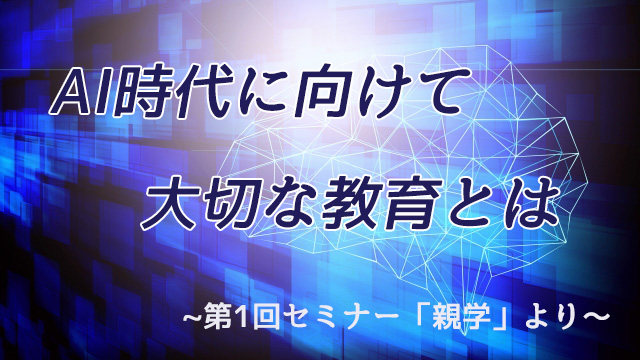
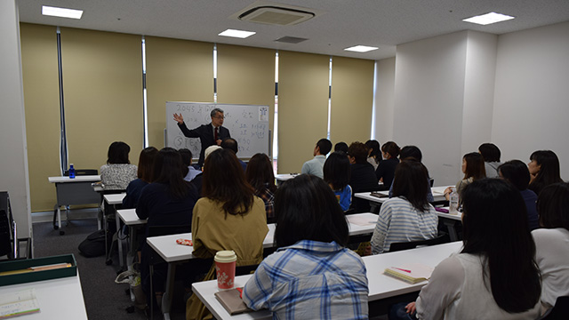

2045年問題というのがある。
これは西暦2045年ごろになると、現在ある仕事の半数以上はAI（人工知能）に取って代わられる。すなわち多くの人が職を失うということだ。
この話はもう以前から言われていて、中でも米デューク大学デビットソン教授の「2011年に小学校に入学した子どもたちの６５％は、今存在しない職に就くだろう」という発言が有名。
つまり今の子どもたちが社会の中枢を担うころには、職業の概念それ自体が変わっていることになる。今ある定型的な仕事―それはデータ入力を中心とする会計処理や多くの事務仕事さらにはタクシーやバスの運転、工場での作業など―の大部分は人工知能搭載のコンピューターやロボットがやり、それに代わってまったく新しい産業が登場するだろうということだ。
これを第4次産業革命と言う人もいる。どんな時代が到来するか未知数は多いが、次の事は言えると思う。AIがほとんどの仕事を人間に変わってするということは逆に言えば「人間にしかできない仕事」の重要性がますます高まるということだ。
それは数値化できない領域。人間ならではの創造性、共感や感動をキーワードにした分野になるだろう。たとえばスポーツ選手や教師、芸術家そして生活様式や組織体をデザインする一種のアートディレクターなど、人間にしかできない仕事はたくさんある。
教育の世界にも大変革が起こるのは間違いない。学校に行くのが絶対必要ではなくなる。現にアメリカでは日本の中、高生に当たる若者が200万人もホームスクーリングで学んでいると言われている。ホームスクーリングとは学校に通わずに家庭に拠点を置いて、民間のオンライン学習サービスをネットなどで利用するシステムだ。日本でも「スタディサプリ」というオンライン学習サービスが普及しつつある。
特筆すべきはアメリカの調査だが、学校に通っている生徒よりホームスクーリングで学んだ者のほうが名門大学に合格する率が高いということ。これは何を意味するのか？
要するに、今まで先生が教科書を使って教室で教えるような知識は学校に行かなくてもネットで「手軽に」学べるということ。もしかしたら学校の授業よりも、より楽しく面白く学べるかも知れない。今でもすでに学習サービスのコンテンツは世界中で広まり、クオリティも日々充実しつつある。
だから学校が存続するためには数値化できない学力の部分、すなわち生徒同士が教え合ったりディベートしたり共同で調べたりすることで互いに切磋琢磨し発想力や発信力を高める場になることが必要になる。
いわゆるアクティブラーニングという様式だ。
だが現状において日本の教育現場は大幅に立ち遅れが目立つ。文科省が「やれ」と言うので渋々「やろうとしている」のが大半で、効果的に運営しているのはごくごく一部の学校に限られている。
いずれにしてもこれからの時代、学校に通うことの意義そのものが激しくゆらいでいくことは疑う余地はないと感じている。
家庭教育で大切なこと
さて、今の子どもたちが社会で働き手の中心となる時代「人間にしかできない仕事」をうまく担っていくにはどうすれば良いか。つまり社会で有用な人となり充実した人生を送るために何が必要なのか。
今までのように学校で良い成績を取り、良い大学を出て安定した職に就くことを目指すべきなのか。もちろん、そうではない。そのような古い発想はもっとも危険と知るべきだ。なぜならその考えは「大企業に勤めることが安定」「終身雇用」など大組織の存在や右肩上がりの経済成長が前提だからだ。
先日、経団連の会長や大企業のトップが「もう終身雇用は無理！」と口をそろえて発言したように、一つの企業が社員を一生丸抱えすることなどできない時代なのだ。
そもそもAIの活躍によって高度成長期型の大企業自体が存続不能なのだ。そして人生は100年時代を迎える。100歳まで生きるということは労働年数は70～80年となる。2045年以降は会社の寿命は20年と言われている。有能な人は自らのスキルを生かして複数の会社を渡り歩いたり、同業の優秀な人々（世界中に散らばる）とネットワークを形成して協働するようになるだろう。
ここでポイントとなるのは「どんな大学を出たか」ではなく「何ができるのか」「どんなスキルをもっているか」が問われるということ。つまり学歴ではなく個人そのものの能力が重要となる。優秀な人間かどうかの評価は、その人のもつ能力なりスキルのユニークさや斬新さそしてどれだけ社会に貢献できるかにかかってくるからだ。
さてここまでの話から今の子どもたちに必要な教育とりわけ家庭での教育の方向性は見えてくるのではないだろうか。
親が考えがちな「5教科まんべんなくできることが望ましい」とか「偏差値の高い学校へ行くことが良いこと」といった古い価値観は通用しない。所詮はペーパーテストという数値化できる成績でしか判断してないからだ。これからの時代は、その数値化できない領域をいかに伸ばすかのほうが大切なカギとなる。
しかし数値化できない領域とは何だろう。そこが多くの親にとって悩みどころかも知れない。
端的に言ってそれは―何度かこの記事で言ってきたように―知的な好奇心ということに尽きる。これを伸ばすには今までのような「覚える」ことを強制する指導ではいけない。それは今まで同様子どもたちの元々もっている知的好奇心の芽をつむことになるだろう。
親は子どもの興味関心を大切に育むことが大事になる。そして子どもが関心分野をもっともっと深めて自ら学んでいくよう励ます姿勢をもって欲しい。下手に教え導こうとせずまた目先の点数にこだわらず、長期的展望で子どもの知的欲求が自然に育つよう見守ることだ。その姿勢こそが子どもにとって「良い環境」となる。
さらに言うなら、この知的探究において結果（成果）ばかり求めずそのプロセスそのものを大切にすること。つまり失敗を恐れず何度も試行錯誤して良いのだという大らかさだ。正解を求めるから失敗を恐れてしまう。日本の教育のもっともいけないところだ。
これからの時代は「何が正解かは分からない」のが当たり前の常識になる。今までのように正解が一つしかないという縛りから解放されなければならない。「正解」という答えを求めるより「問い」そのものを立てることのほうが大切なのだ。なぜなら「良き問い」こそが良き答えを導くからだ。
これからは学校に頼るのではなく真の意味で家庭教育が大切になってくる。つまり親だからこそできる教育。それは「人間にしかできない仕事」とは何か。その性質を考察すれば自ずと見えてくるのではないか。

※先日のセミナー親学第1弾では以上の内容でお話しました。今回のテーマ「2045年問題と家庭教育の大切さ」については多くの皆さんが関心をもって下さり、大幅な時間延長にもかかわらず席を立つ人もなく最後まで熱心に耳を傾けて下さいました。
終了後も質問が相次ぎ関心の高さを実感した次第。
私も久しぶりのセミナーで楽しく話すことができました。改めて出席された皆さんに感謝致します。